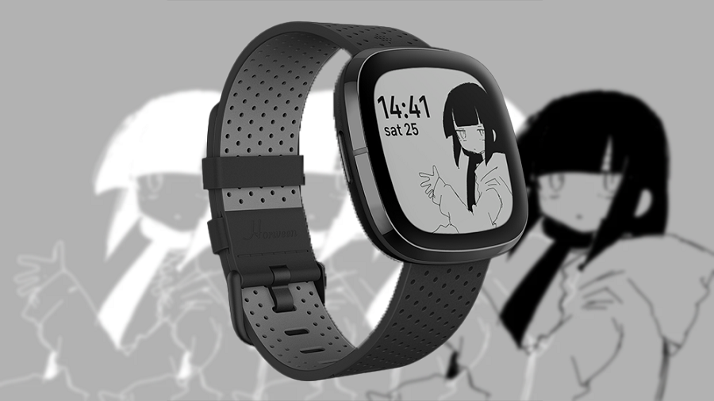

This page lists Fitbit apps I have coded, to enquire about them,
email me.
Lagtrain - A clockface based on inabakumori's song "Lagtrain". Animates on touch. - Supports all Sense and Versa devices. -
WearOS port (WearOS 3+)
Masked Man - A clockface based on Eve's (NOT ME THE VOCALOID P!!!!!!) song "As You Like It". - Supports Sense, Versa 3.
ok get lenned - An app that tries to replicate the "ok get lenned" gif. I've been 'lenning' people for years now and this app lets me do it in real life. - Supports Sense, Versa Lite, Versa 1 - 3.
Midnight Countdown - A clockface that counts down to midnight, intended for new years. - Supports Sense, Versa 3.
Boykisser - A clockface that... well... yeah... - Supports Sense, Versa 3.
Ticket Tracker - An app intended to track hack club Arcade tickets. - Supports Sense 1 & 2, Versa 3 & 4 (Versa 4 and Sense 2 users must sideload, as Fitbit rejects all apps for these devices for no reason).
Eve's Website - A simple recreation of my website's homepage. - Supports Sense 1 & 2, Versa 3 & 4. Note: it also claims to support the Charge 5, but it doesn't because that's impossible and I was just abusing GAM for the memes.